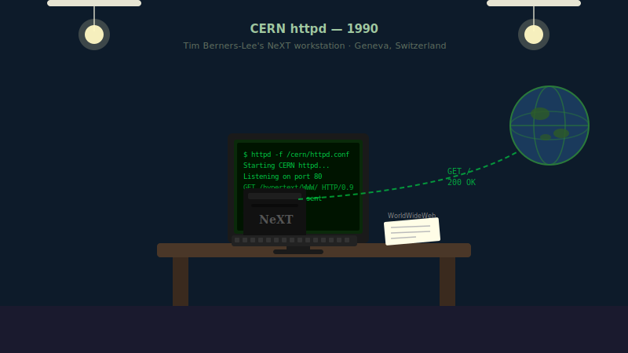

1990
CERN httpd 시범 운영
CERN httpd는 연구실에서 첫 웹 서버를 띄워, 요청이 오면 HTML을 돌려보내는 방식을 처음 보여줬습니다.

1990년 말, 팀 버너스-리는 연구소의 컴퓨터에 httpd라는 프로그램을 설치하고 동료들에게 시연을 선보였습니다. 웹 브라우저에서 주소를 입력하자, 컴퓨터는 해당 문서를 찾아 화면에 띄워주었습니다. 링크를 클릭하는 것만으로 다른 연구 노트를 바로 확인할 수 있게 되자, 연구실의 게시판은 서로 연결된 거대한 문서 보관소로 탈바꿈했습니다.
처음에는 연구소 내부에서만 사용되었지만, 1991년 여름에 프로그램과 설명서가 공개되면서 전 세계의 다른 연구 기관들도 앞다투어 이 서버를 설치하기 시작했습니다. 복잡한 과정 없이 문서를 공유할 수 있다는 사실이 알려지며, 웹 서버는 단순한 실험을 넘어 실제 서비스로 발전할 수 있다는 가능성을 증명했습니다.
CERN httpd는 정적인 문서나 폴더 목록을 보여주는 기본적인 기능을 제공하며, 훗날 웹 서버가 더 복잡한 작업을 처리할 수 있는 기반을 마련했습니다. 사용자의 요청을 받아 해석하고 알맞은 결과를 돌려준다는 웹 서버의 핵심적인 역할이 이때 처음으로 확립되었습니다.